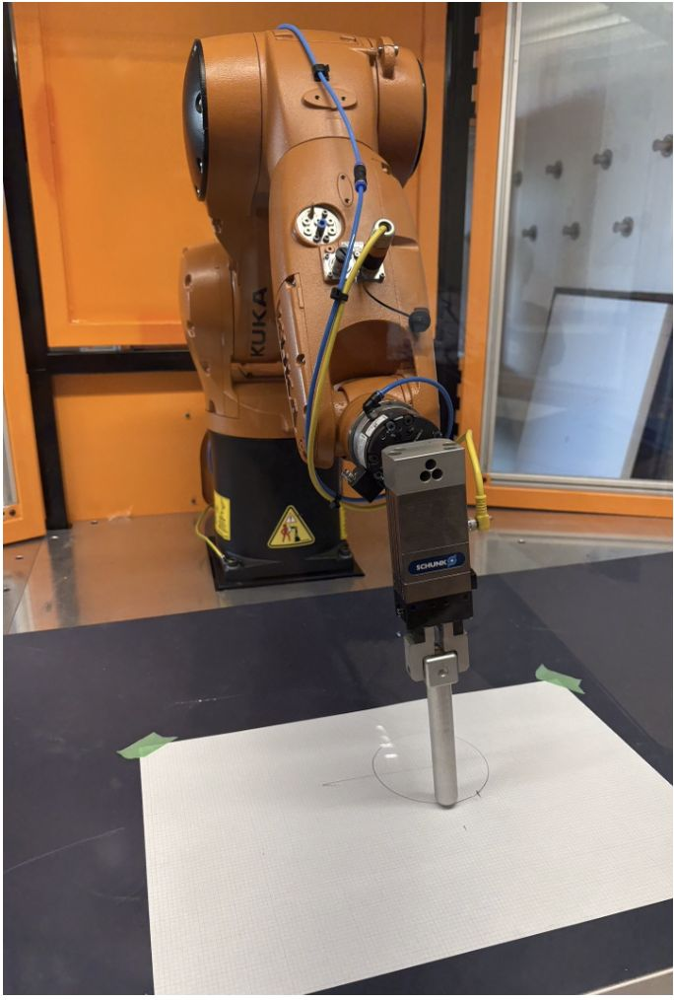
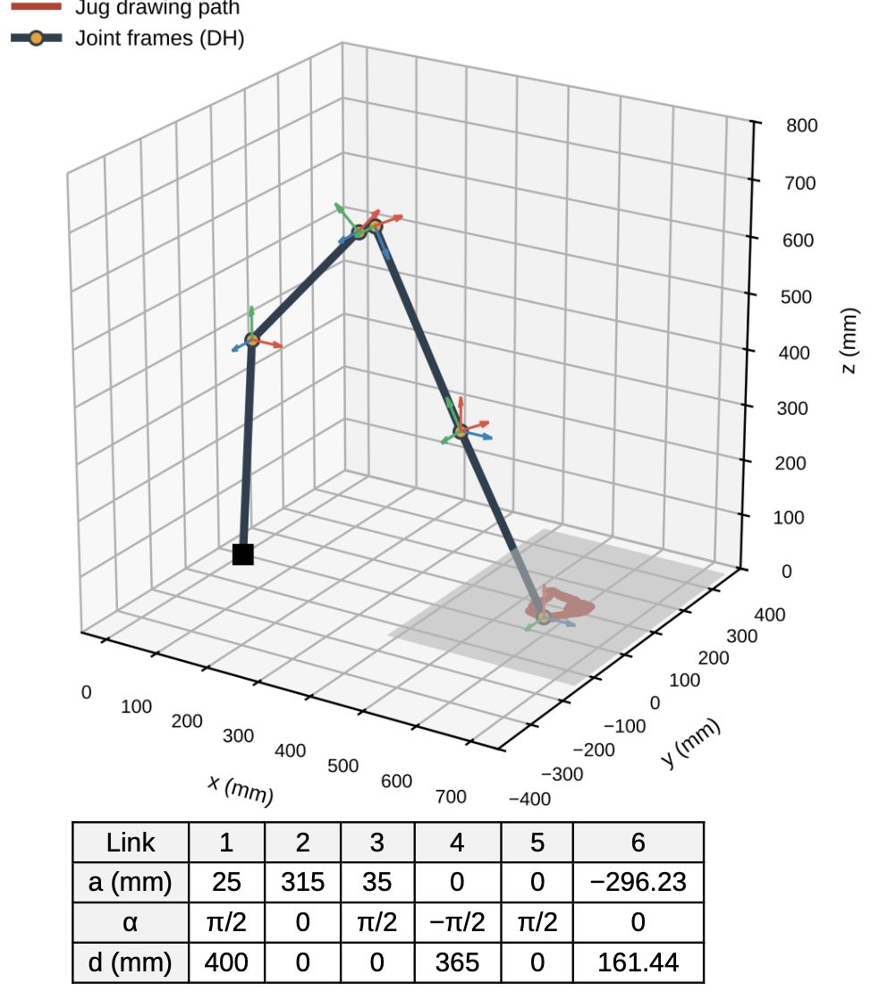
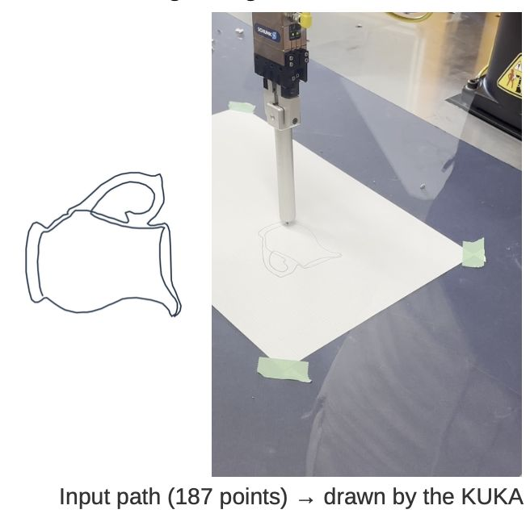

Robot Modeling & Control
KUKA robotic arm: kinematics-driven drawing
Problem
Derive the forward and inverse kinematics of a 6-DOF industrial arm, then use them to make it draw custom designs on paper.
Pipeline
- Trace a design into (x, y) points.
- Do a 3-point calibration of the paper plane.
- Transform points from the paper frame to the robot base frame.
- Solve inverse kinematics using kinematic decoupling (elbow-up).
- Send joint commands to the KUKA.
6-DOFfull DH model, forward & inverse kinematics derived by hand
187 ptscustom “jug” design drawn by the arm
Demo · real hardware
The KUKA drawing the jug design
All 187 points, computed through my inverse kinematics and executed on the real arm. Shown at 8× speed.


